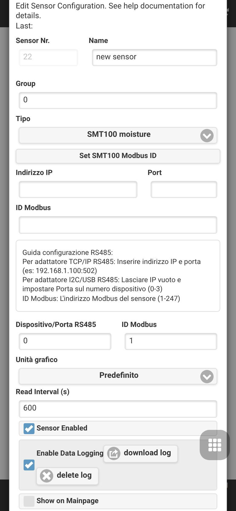
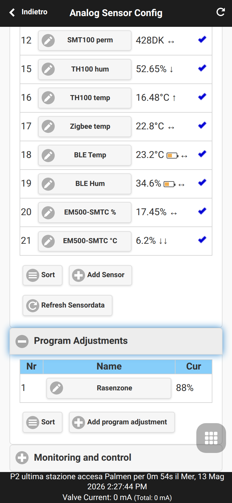
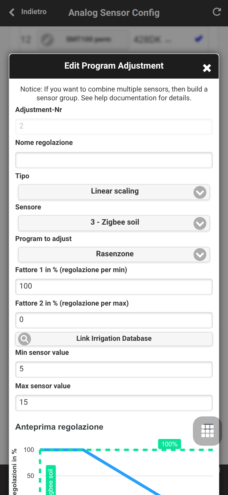
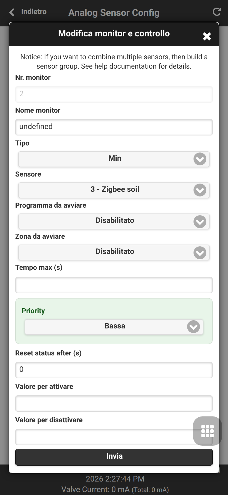
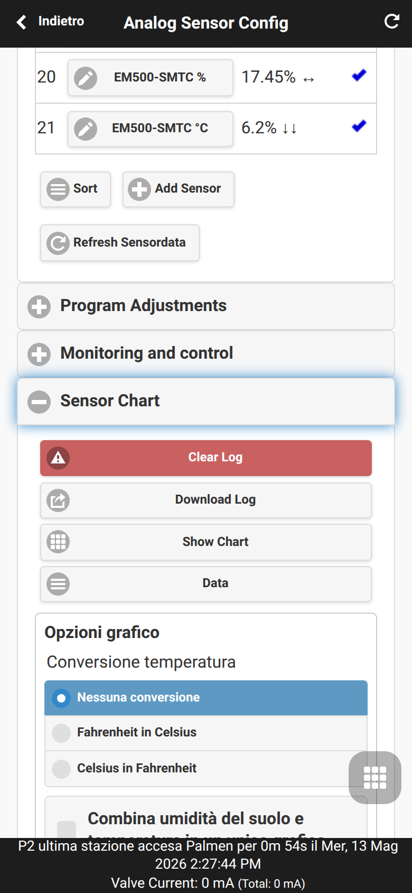
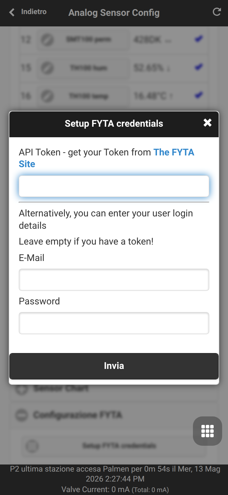
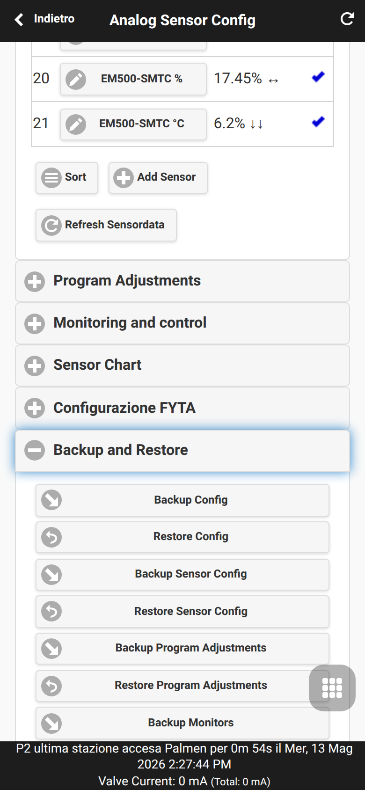

Configurazione sensori analogici
Analog Sensor Configuration è l’area UI OpenSprinklerPro per definire sorgenti sensore e usare i valori nell’automazione dell’irrigazione. Si apre dal menu inferiore con Analog Sensor Configuration.

Pagine correlate: Automazione sensori e monitor, Sensori FYTA, Estensione OpenSprinklerPro, addendum API e piattaforme.
Indice
- Definizioni sensori
- Regolazioni programma
- Monitor e avvisi locali
- Grafici e dati sensore
- Configurazione FYTA
- Backup e ripristino
Definizioni sensori
La prima sezione definisce la lista sensori. Ogni riga contiene numero, nome, valore corrente e stato attivo. Add Sensor apre l’editor di un nuovo sensore; i sensori esistenti si modificano toccando il nome.

Indice di questa sezione:
- Campi dell’editor
- RS485 / Modbus
- Scheda sensori analogici (ASB)
- Ingressi analogici OSPi
- Sorgenti wireless, cloud e remote
- Dati meteo
- Sensori di gruppo
- Diagnostica
Campi dell’editor
| Campo | Significato |
|---|---|
| Numero, nome e gruppo | Identificano il sensore in liste, grafici, regolazioni programma e monitor. I gruppi aiutano a ordinare e filtrare sensori correlati. |
| Tipo | Seleziona driver o sorgente virtuale. Il tipo determina quali campi aggiuntivi sono visibili. |
| Unità e formato | Definiscono visualizzazione, registrazione e confronti. Scegliere un’unità coerente con il valore fisico o con la sorgente esterna. |
| Intervallo, log e mostra | L’intervallo controlla la frequenza di aggiornamento. Log abilita lo storico per i grafici; mostra controlla la visibilità nelle viste UI. |
| Bus, indirizzo e canale | Usati da RS485/Modbus, ASB e ingressi analogici OSPi per scegliere bus hardware, indirizzo dispositivo o canale analogico. |
| Scalatura utente | Per sensori analogici personalizzati converte tensione/valore ADC grezzo nel valore finale. |
| Topic MQTT e filtro | I sensori MQTT si iscrivono a un topic e possono estrarre il valore da JSON o testo. |
| Lista sensori sorgente | I sensori di gruppo calcolano un nuovo valore dai sensori selezionati. Le sorgenti dovrebbero usare unità compatibili. |
RS485 / Modbus
Questi tipi sono per sensori cablati su bus RS485 o dispositivi Modbus RTU generici. Configurare bus, indirizzo slave, registro/canale e intervallo secondo il dispositivo collegato.
| Tipo sensore | Spiegazione |
|---|---|
| Truebner SMT100 RS485 Modbus, modalità umidità | Legge l’umidità del suolo da un Truebner SMT100 tramite RS485/Modbus. Utile per decisioni di irrigazione basate sul contenuto volumetrico d’acqua. |
| Truebner SMT100 RS485 Modbus, modalità temperatura | Legge il canale temperatura dell’SMT100 per registrazione o regole monitor. |
| Truebner SMT100 RS485 Modbus, modalità permittività | Legge la permittività dielettrica dell’SMT100 per diagnostica o modelli del suolo avanzati. |
| Truebner TH100 RS485 Modbus, modalità umidità | Legge l’umidità relativa di un Truebner TH100, ad esempio per serra o ambiente. |
| Truebner TH100 RS485 Modbus, modalità temperatura | Legge la temperatura del TH100 per ambiente o zona di installazione. |
| Sensore generico RS485/MODBUS RTU | Legge un valore Modbus RTU configurabile da apparecchiature di terze parti. Indirizzo, registro, formato dati e scala devono seguire il manuale. |
Scheda sensori analogici (ASB)
I tipi ASB leggono ingressi in tensione dalla scheda analogica OpenSprinkler e li convertono in valori fisici. Selezionare il canale corretto e solo modalità compatibili con cablaggio e tensione di alimentazione.
| Tipo sensore | Spiegazione |
|---|---|
| ASB - modalità tensione 0..5V | Riporta direttamente la tensione ASB misurata tra 0 e 5 V. Utile per calibrazione o sensori con conversione propria. |
| ASB - 0..3,3V a 0..100% | Converte una tensione da 0 a 3,3 V in percentuale per segnali analogici generici. |
| ASB - SMT50 modalità umidità | Converte l’uscita analogica di un Truebner SMT50 in umidità del suolo. |
| ASB - SMT50 modalità temperatura | Converte l’uscita temperatura dell’SMT50. |
| ASB - SMT100 analogico modalità umidità | Converte l’uscita analogica di umidità di un Truebner SMT100. |
| ASB - SMT100 analogico modalità temperatura | Converte l’uscita analogica di temperatura di un Truebner SMT100. |
| ASB - Vegetronix VH400 | Converte l’uscita del Vegetronix VH400 in umidità del suolo. |
| ASB - Vegetronix THERM200 | Converte l’uscita del Vegetronix THERM200 in temperatura. |
| ASB - Vegetronix AquaPlumb | Converte l’uscita Vegetronix AquaPlumb per presenza d’acqua o misure di livello. |
| ASB - sensore definito dall’utente | Usa una scalatura personalizzata per sensori senza conversione integrata. Definire unità, formato e conversione con attenzione prima dell’automazione. |
Ingressi analogici OSPi
Questi tipi sono per installazioni OSPi/Raspberry Pi con ingressi analogici. Non si applicano a controller solo ESP senza l’hardware analogico corrispondente.
| Tipo sensore | Spiegazione |
|---|---|
| Ingresso analogico OSPi - modalità tensione 0..3,3V | Riporta direttamente la tensione misurata tra 0 e 3,3 V. |
| Ingresso analogico OSPi - 0..3,3V a 0..100% | Converte un ingresso 0-3,3 V in percentuale per sensori analogici generici. |
| Ingresso analogico OSPi - SMT50 modalità umidità | Converte l’uscita umidità di un SMT50 collegato a OSPi. |
| Ingresso analogico OSPi - SMT50 modalità temperatura | Converte l’uscita temperatura di un SMT50 collegato a OSPi. |
| Temperatura interna Raspberry Pi | Legge la temperatura CPU del Raspberry Pi. Utile come diagnostica termica di un contenitore OSPi. |
| Temperatura interna ESP32 | Legge il sensore temperatura interno ESP32 quando supportato. Da usare come diagnostica controller, non come temperatura ambiente calibrata. |
Sorgenti wireless, cloud e remote
Questi tipi ricevono valori da integrazioni radio, servizi cloud, MQTT o un altro controller OpenSprinkler. Verificare la disponibilità piattaforma: Zigbee e BLE richiedono build ESP32 compatibili, FYTA richiede credenziali cloud, MQTT richiede un broker.
| Tipo sensore | Spiegazione |
|---|---|
| Sensore Zigbee | Mappa un valore riportato da un dispositivo Zigbee associato, come temperatura, umidità o umidità del suolo. Selezionare dispositivo e misura esposta. |
| Sensore BLE | Legge un sensore Bluetooth Low Energy supportato. Impostare intervallo di scansione e dispositivo bilanciando freschezza e carico radio. |
| Sensore umidità FYTA | Importa umidità del suolo da un sensore pianta FYTA dopo la configurazione FYTA. |
| Sensore temperatura FYTA | Importa temperatura da un sensore pianta FYTA dopo la configurazione FYTA. |
| Sottoscrizione MQTT | Si iscrive a un topic MQTT e interpreta il valore ricevuto. Configurare topic, filtro JSON/testo opzionale, unità e timeout. |
| Sensore OpenSprinkler remoto | Legge un sensore da un altro controller OpenSprinkler. Configurare URL/controller remoto e numero del sensore sorgente. |
Dati meteo
I sensori meteo espongono valori già noti al controller dal servizio meteo configurato. Usare il tipo con unità coerente con regole e grafici.
| Tipo sensore | Spiegazione |
|---|---|
| Dati meteo - temperatura (°F) | Temperatura del servizio meteo in gradi Fahrenheit. |
| Dati meteo - temperatura (°C) | Temperatura del servizio meteo in gradi Celsius. |
| Dati meteo - umidità (%) | Umidità relativa del servizio meteo in percentuale. |
| Dati meteo - precipitazioni (inch) | Precipitazioni del servizio meteo in pollici. |
| Dati meteo - precipitazioni (mm) | Precipitazioni del servizio meteo in millimetri. |
| Dati meteo - vento (mph) | Velocità del vento in miglia all’ora. |
| Dati meteo - vento (kmh) | Velocità del vento in chilometri all’ora. |
| Dati meteo - ETO | Evapotraspirazione di riferimento usata come contesto per l’irrigazione. |
| Dati meteo - radiazione | Radiazione solare dalla sorgente meteo, se disponibile. |
Sensori di gruppo
I sensori di gruppo creano un valore aggregato da altri sensori. Scegliere sorgenti con unità e intervalli comparabili perché il risultato sia significativo.
| Tipo sensore | Spiegazione |
|---|---|
| Gruppo sensori con valore min | Riporta il valore corrente più basso tra le sorgenti selezionate. |
| Gruppo sensori con valore max | Riporta il valore corrente più alto tra le sorgenti selezionate. |
| Gruppo sensori con valore medio | Riporta la media aritmetica delle sorgenti selezionate. |
| Gruppo sensori con valore somma | Riporta la somma delle sorgenti selezionate, ad esempio pioggia combinata o totali simili a portata. |
Diagnostica
I sensori diagnostici rendono lo stato del controller disponibile nello stesso sistema di grafici e monitor dei sensori ambientali.
| Tipo sensore | Spiegazione |
|---|---|
| Memoria libera | Riporta la RAM attualmente libera. I monitor possono rilevare pressione memoria o perdite nei test lunghi. |
| Spazio libero | Riporta lo spazio di archiviazione rimanente, se supportato. Utile per avvisare prima che log o configurazioni riempiano il filesystem. |
Regolazioni programma
Program Adjustments adatta la durata di irrigazione di un programma in base a un valore sensore. Esempi tipici sono ridurre l’irrigazione con suolo umido o aumentarla con temperatura alta.


Indice di questa sezione:
Modello di regolazione
Ogni regolazione collega un sensore a un programma di irrigazione e calcola un modificatore percentuale. Prima registrare il sensore e verificare il suo intervallo di valori, poi applicarlo all’irrigazione reale.
Tipi di regolazione
| Tipo | Uso |
|---|---|
LINEAR |
Scala in modo continuo tra un punto basso e uno alto configurati. |
DIGITAL_MIN |
Attiva una riduzione o blocco binario quando il sensore è sotto una soglia. |
DIGITAL_MAX |
Attiva una riduzione o blocco binario quando il sensore è sopra una soglia. |
DIGITAL_MINMAX |
Applica comportamento binario dentro o fuori da un intervallo configurato. |
Vedi Automazione sensori e monitor per il modello funzionale e addendum API per REST/MCP.
Monitor e avvisi locali
Monitoring and Control crea regole di soglia e logica dai sensori. I monitor possono generare avvisi locali, alimentare notifiche e combinare condizioni come “suolo asciutto” e “fascia mattutina”.


Indice di questa sezione:
Struttura delle regole
Una regola seleziona un sensore, lo confronta con soglia o stato e definisce cosa succede quando la condizione è vera. Nomi chiari rendono gli avvisi comprensibili.
Logica e finestre orarie
I tipi monitor includono soglie, regole pioggia/suolo digitali, combinazioni logiche, finestre orarie e stati monitor remoti. Vedi Automazione sensori e monitor.
Grafici e dati sensore
Sensor Chart mostra i valori registrati. Usarlo per verificare la plausibilità delle misure prima di regolazioni o monitor. L’UI può anche scaricare i log o aprire la tabella dati.

Indice di questa sezione:
Lettura dei grafici
Controllare campioni mancanti, picchi inattesi e unità errate. Confrontare sensori correlati nello stesso gruppo prima di decisioni automatiche.
Scaricare i dati
I dati registrati possono essere scaricati o consultati in tabella. È utile per calibrazione, diagnostica e condivisione delle tracce.
Configurazione FYTA
FYTA Setup salva token API o credenziali FYTA e mappa i sensori pianta in OpenSprinkler. Vedi Sensori FYTA.


Indice di questa sezione:
Credenziali
Inserire token API o credenziali richiesti dalla versione firmware. Mantenerli privati e aggiornarli se l’accesso FYTA cambia.
Mappatura piante
Dopo l’autenticazione, mappare umidità e temperatura FYTA su sensori OpenSprinkler per grafici, monitor e regolazioni.
Backup e ripristino
Backup and Restore esporta o ripristina configurazione sensori, regolazioni programma e monitor separatamente dal backup generale.

Indice di questa sezione:
Contenuto incluso
I backup includono definizioni sensore, regole di regolazione e regole monitor. Non sostituiscono un backup completo del controller per altre impostazioni.
Ripristino sicuro
Esportare un backup prima di molte modifiche, ripristinare solo file da fonti affidabili e verificare i valori sensore dopo il ripristino prima di riattivare gli automatismi.